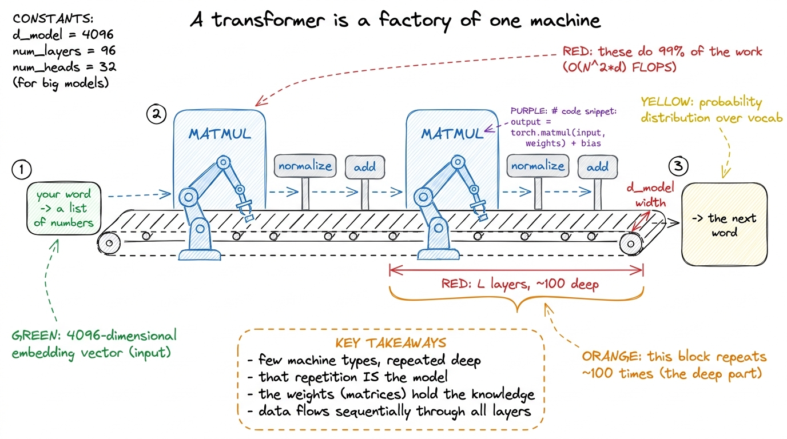
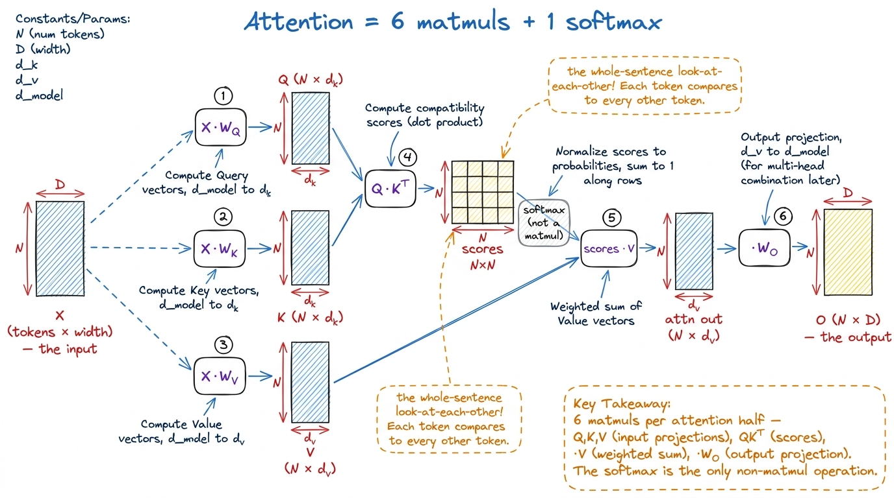
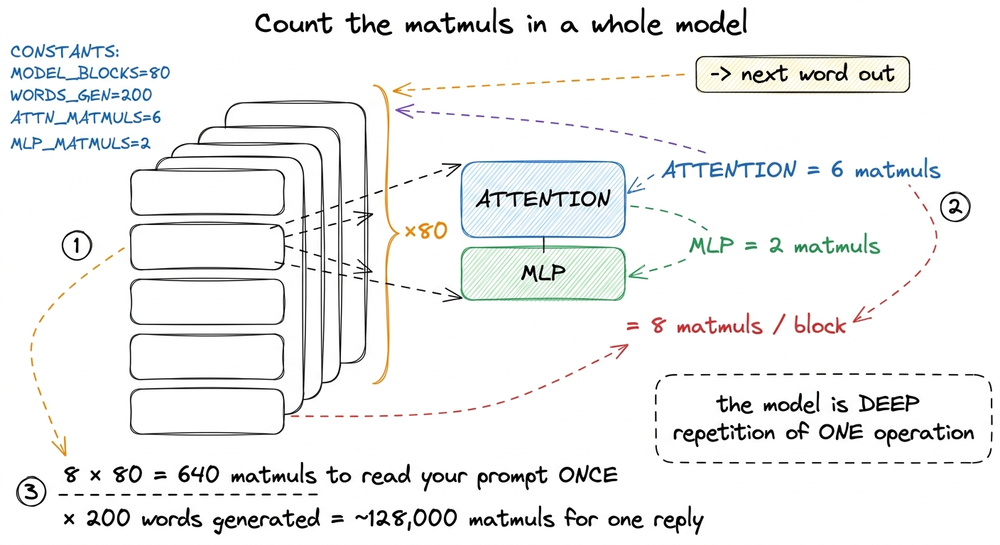

Why matrix multiply is the whole game
By the end of this chapter you'll be able to stand at a whiteboard and teach the single most important sentence in this whole workshop: a neural network is almost nothing but matrix multiplies. Not "uses" matrix multiplies. Is them. You'll trace a real transformer from the word going in to the word coming out, and you'll count the matmuls with your finger. And when you're done, the students will understand — in their bones — why we're about to spend four weeks making one operation fast.
This chapter assumes the students already met matrix multiply as a grid of dot products (the previous chapter). Here we don't teach how to multiply. We teach where it lives, how much of it there is, and why that changes everything.
The one sentence to open with
Say this first, before any diagram: "When you talk to ChatGPT, the machine is not thinking. It is multiplying matrices. That's it. Billions of times. The whole magic of AI, underneath, is one boring operation done at an unimaginable scale."
Then let it sit for a second. It sounds too simple to be true. Making them believe it — really believe it — is the job of this chapter.
The metaphor: a factory with a few machine types
A modern AI model looks impossibly complex from the outside — trillions of parameters, hundreds of layers. But walk inside and it's like a huge factory that only owns a few kinds of machine, bolted together in a repeating pattern down a very long assembly line.
There's really just one master machine: the matrix multiplier. A word comes in as a little list of numbers. It hits a matmul machine and comes out transformed. It hits another. And another. A few helper machines sit between them — a "normalize" station, an "add" station, a softmax — but they're small. The matmul machines are the ones doing the heavy lifting, burning the electricity, and setting the pace of the whole line.

figure rendering · The whole model as an assembly line: one machine type — matrix multiplFirst, how a word even becomes numbers
Before any multiplying happens, the model has to turn your text into numbers, because matrices are made of numbers. Teach this in two quick steps.
Step one: tokens. The model chops your sentence into pieces called tokens — roughly words or word-fragments. "kernels" might be one token; "unbelievable" might split into "un", "believ", "able". Each token has an ID number, like a seat number.
Step two: embeddings. Each token ID looks up a row in a giant table — the embedding matrix — and pulls out a list of numbers (say 4096 of them) that represents that word's "meaning" as a point in space. So a sentence of 10 tokens becomes a 10 × 4096 matrix: one row per token, one column per meaning-dimension.
That grid — rows are tokens, columns are the model's width — is the raw material. Everything downstream is that grid meeting weight-grids in matrix multiplies. Let's count them.
Counting the matmuls in one transformer block
A transformer is a stack of identical blocks. Teach one block completely, then just say "now repeat this 32 times" (or 80, or 96). Each block has two halves: attention and the MLP. Both are made of matmuls. Let's walk them.
The attention half — four matmuls plus the score
Attention is how each word "looks at" the other words to gather context. Here's the plain version. Our input grid X (tokens × width) first gets turned into three new grids — Q (queries), K (keys), and V (values) — and each one is made by a matrix multiply of X with a learned weight matrix.
Q = X · W_Q— one matmul.K = X · W_K— one matmul.V = X · W_V— one matmul.
That's three already, and we haven't even done attention yet. Now the actual attention math, straight from the grounding: softmax(Q Kᵀ / √d) · V.
Q Kᵀ— every query dotted with every key. A matmul. This is theN × Nscore matrix — how much each word attends to each other word.- softmax — a helper station, not a matmul (it just normalizes each row into probabilities).
(scores) · V— the probabilities times the values. A matmul.
And then the result gets mixed back with one more weight matrix:
O = (attention output) · W_O— a matmul.

figure rendering · The attention half of a block, drawn as what it actually is: six matriThe MLP half — two big matmuls
After attention, the grid flows into the MLP (multi-layer perceptron), also called the feed-forward network. This part is even simpler. It's two matmuls with an activation squashed between them:
H = X · W_1— blow the width up, usually 4× wider. A matmul. (This is often the single biggest matmul in the whole model.)- an activation function (GELU/SiLU) — a helper station, applied to each number, no matmul.
Y = H · W_2— bring the width back down. A matmul.
Add them up
So one transformer block is: 6 matmuls (attention) + 2 matmuls (MLP) = 8 matmuls. Plus a couple of tiny helper stations. Now the punchline that makes the room go quiet:

figure rendering · Stacking it up: eight matmuls per block, eighty blocks, run once per gThe real math, built up gently
Now put the shapes on it, so a curious student can verify the cost. Take one MLP matmul: input X is (N × d) — N tokens, width d. Weight W_1 is (d × 4d). From the shape rule (inner dims cancel), the result is (N × 4d).
The cost of a matmul, in multiply-adds, is rows × cols × inner = N × 4d × d. For N = 200 tokens and d = 4096, that's 200 × 16384 × 4096 ≈ 13 billion multiply-adds — for one of the 640 matmuls. Multiply out across the whole model and you land in the trillions of operations per generated word, exactly the figure the grounding article quotes.
Why the kernels matter — the whole point
Here's where you close the loop and tell them why they're here. Every one of those 640-plus matmuls is executed on the GPU by a small program called a kernel. The model just says which matmuls to do and in what order. The kernel decides how fast each one runs. And two kernels computing the exact same matmul can differ by 50× or more in speed depending purely on how they move data around the chip.
torch.matmul on the MLP-sized matrices in a timing loop. Show the raw FLOP/s. Then show that the same multiply written as a naive triple-loop in pure Python would take longer than the class. The gap between "PyTorch's tuned kernel" and "the obvious loop" — on the identical math — is the entire reason kernel engineers have jobs.1 A subtlety worth a mentor knowing but not necessarily leading with: during generation, most passes process only one new token at a time, so those matmuls become skinny matrix-times-vector operations that are memory-bound, not compute-bound. That's why serving is often bandwidth-limited while training is compute-limited — same matmuls, different shapes. It sets up the "three regimes" chapter beautifully.
The frame to leave them with
Send them out with this: a language model is a very deep stack of the same handful of matrix multiplies, run once for every word it says. The intelligence is in the weights — the numbers inside those grids, learned from the internet. But the doing — the actual work the machine performs, the thing that costs money and time and electricity — is matrix multiplication, hundreds of times per word, trillions of operations deep. Everything else in this workshop is in service of making that one operation fly.
You can now teach
- The opening claim — "a model isn't thinking, it's multiplying matrices" — and how to prove it isn't hyperbole.
- How a word becomes a grid of numbers (tokens → embeddings → a tokens×width matrix), the raw material every matmul feeds on.
- The attention half of a block as exactly six matmuls plus a softmax (Q, K, V, QKᵀ, ·V, ·W_O), demystifying "the attention mechanism."
- The MLP half as two matmuls bracketing an activation — expand, judge, compress — and why the weights number in the billions.
- The count that lands the point: 8 matmuls × 80 blocks = 640 per pass, ×200 words ≈ 128,000 matmuls for one reply, trillions of operations deep.
- The production hook: every matmul is a kernel, a naive kernel wastes 98% of an H100, and the whole workshop is about closing that 70× gap.